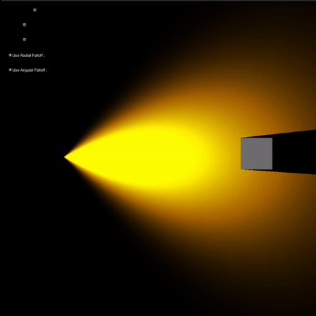

2D Lights and Shadows
Understanding Light Falloffs
There are 2 main types of light falloffs: radial and angular, which govern the falloffs with respect to
distance and the angular deviation from the direction of propogation.
The intensities and falloffs are calculated using the following formulae:
The final intensity is calculated as the product of the radial and angular falloffs with some base light intensity to control how the light appears.

The "light" is calculated and rendered in the fragment function of an unlit shader. The position, size, and rotation are dynamically computed and rendered as the material of a quad. Using stencil buffers, the light is rendered with the option to be blocked out by a "shadow-caster" in later stages.
Procedural Shadow Caster Generation
This an extension to my lights experiment cause you can't have lights without shadows :)
As I understand, shadow caster meshes are generated behind the scenes when working in 2D with lights in
the Unity game engine.
I thought this would be an excellent opportunity to explore stencil buffers and the fascinating topic of
Geometry Shaders!


Construction of the shadow caster mesh works in 8 stages:
1. For every triangle in the mesh, add 2 more points, as shown in the first image above.
2. Join the new points to the existing points as shown to form 2 new triangles.
3. Set the normals of the new vertices to be the same as the closest surface, as shown(in
yellow).
4. Find a vector from each vertex to the light source's position.
5. Calculate the dot product between the vertices' normals and the vector to the light
position.
6. Get all vertices whose dot product is negative.
(This means that the surface is facing away from the light.)
7. Project these vertices in the opposite direction to the light.
8. Shade the mesh with stencils appropriately to get "SHADOWS!!" *cue angel sounds*.

Tested only with very basic meshes. Preliminary tests suggest my current system will only work for convex meshes, but I need to test further and confirm. I also haven't considered rotations, so rotating the mesh for now gives weird artifacting. Performance is excellent, also because I'm working with just a handful of vertices.
Highly inspired by Noel Berry, the brilliant programmer who built the lights and another system for Celeste! Although he built his system with textures, and I'm using mesh manipulation, I feel like this experiment helped me Clear a vital hurdle: starting to use geometry shaders. I think that is awesome in its own regard.
"Shadows" being cast against the "light." Works smoothly even when the mesh is scaled.

I will continue working on this concept and eventually have a working implementation of texture-based 2D
lights.
but until then, Cheers!
T